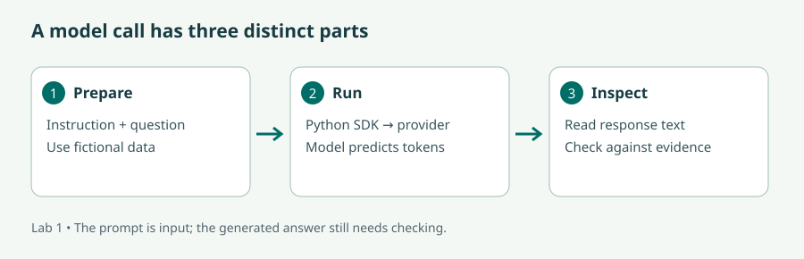
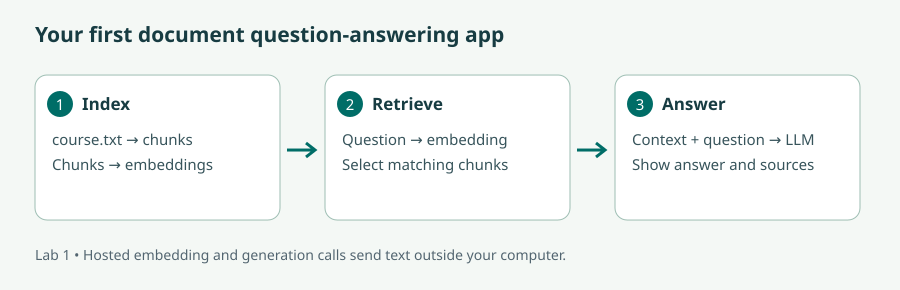

Large Language Models explained briefly · 3Blue1Brown
Watch on YouTube · Use this as the visual alternative to Lesson 1. Pause to sketch how text becomes a next-token prediction.
Understand the building blocks, make your first model calls, and turn local course notes into a question-answering app.
Read the lecture or follow the video route, then complete the illustrated lab and the checks. The videos cover selected concepts; the short bridge notes identify the remaining material. Allow six learning hours per day, with breaks in addition.
Audience: AI Developers and Engineers; Data Scientists and Machine Learning Practitioners; Software Developers and Programmers; Entrepreneurs and Innovators; AI Enthusiasts; Professionals in data-driven industries.
New to Python? Before starting, practise defining a function, importing a package, reading a text file, using a dictionary, and creating a virtual environment. Later modules provide a short bridge back to these skills.
| # | Curriculum objective | Where to learn it |
|---|---|---|
| 1 | Understand what is a Large Language Model (LLM) | Lesson 1 + lab |
| 2 | Understand what is a Generative Pre-trained Transformer (GPT) | Lesson 1 + lab |
| 3 | Use some of the GPT providers – OpenAI, HuggingFace, etc | Lesson 2 + lab |
| 4 | Integrate Python applications with OpenAI and HuggingFace | Lesson 2 + lab |
| 5 | Create simple artificial intelligence (AI) applications using LangChain | Lesson 3 + lab |
| 6 | Query local private data using LlamaIndex and LLM | Lesson 4 + lab |
| 7 | Build AI user interfaces using Gradio | Lesson 5 + lab |
90 min: LLM and GPT concepts.
60 min: prompt experiments.
90 min: provider APIs.
120 min: Python calls and error diagnosis.
60 min: chains and retrieval.
150 min: document assistant lab.
60 min: interface and testing.
90 min: challenge, review, and explanation.
Imagine completing the sentence “Please save this file as a …”. The next word depends on context: “PDF” may fit a document, while “CSV” may fit a table. A language model learns statistical patterns that help it assign probabilities to possible continuations. A large language model learns many such patterns from a large training corpus using a neural network with many adjustable parameters.
Text first becomes tokens: pieces that can be words, parts of words, punctuation, or other units. Tokens become numerical vectors. The model transforms these vectors and predicts a distribution over the next token. A decoding procedure selects a token and repeats. This simple objective can support complex behaviour because predicting text requires learning relationships among language, facts, and patterns of reasoning. It does not guarantee that a fluent answer is true.
GPT expands to Generative Pre-trained Transformer. Generative means producing output; pre-trained means learning broadly before a specific application uses it; Transformer names the architecture. In a Transformer, attention lets a token's representation draw on relevant parts of its context. In “The trophy did not fit in the suitcase because it was too large,” useful context helps resolve what “it” refers to. A decoder-style GPT predicts later tokens using earlier ones. Further training can improve instruction following.
The context window is the amount of input and output a model can handle in a request. It is not permanent memory. Putting a fact in a prompt makes that fact available for this call; it does not update the model's weights. Training changes weights, inference uses them, and retrieval supplies external evidence at inference time. Keep those three operations separate when debugging an application.
A provider exposes a model through an API. Your Python application sends structured input over the network and receives structured output. OpenAI provides hosted model APIs. Hugging Face provides a model ecosystem and access to inference providers; a model repository is not automatically a running inference endpoint. Also, not every model on Hugging Face is a GPT or even a text-generation model.
Define the call as a contract: which model, what input, which output format, and what happens on failure? Keep credentials in the environment on the server. A timeout means no successful answer has arrived; an authentication error usually means the key or permission is wrong; a rate-limit response means the service cannot accept requests at that rate. Retrying a malformed request does not fix it. Limit retries and inspect the error category.
The OpenAI example uses responses.create and reads output_text. The Hugging Face example uses InferenceClient and a chat-capable model supported by an inference provider. Model identifiers are configuration so you can choose an accessible model without rewriting the program. Follow the OpenAI Python quickstart and Hugging Face inference guide for those SDK contracts.
A practical prompt specifies a task, relevant context, constraints, and a useful output format. For example: “Using the policy below, state the refund deadline in one sentence; if absent, say unknown.” Test it against an answerable question and one that the policy cannot answer. Lower randomness may reduce variation, but it does not turn a model into a database or establish accuracy.
Most useful applications do more than one model call. They format input, call a model, parse output, and handle errors. LangChain provides components for assembling those operations. Our first chain has three parts: a prompt template with named variables, a chat model, and a parser that returns text. The pipe operator connects the output of one component to the input of the next.
Trace a request by hand: the dictionary {"topic": "dictionaries", "audience": "beginners"} fills the template; the resulting messages go to the model; the parser extracts a string. If a variable is missing, the failure occurs before useful generation. If the output violates “three bullets,” the template executed but the model failed a behavioural requirement. Those need different fixes. See the LangChain overview for the framework and integrations.
A model cannot see a file just because it exists on your laptop. A retrieval application loads documents, splits them into manageable chunks, and creates an index. An embedding is a vector representing a piece of text; similar meanings often receive nearby vectors. At question time, the application retrieves promising chunks and includes them in the model's input.
LlamaIndex coordinates loading, indexing, and querying. The lab uses local embeddings and hosted generation. Although the original files and embeddings stay local, retrieved passages go to the hosted model. “Local private data” describes the source, not an automatic privacy guarantee. A fully local design needs both a local embedding model and a local generator, as well as suitable storage and access controls. The LlamaIndex starter tutorial documents the basic index and query-engine pattern.
Gradio connects Python functions to browser inputs and outputs. A textbox supplies a string to a function; the return value appears in an output component. Start with one obvious task and a meaningful label. Show retrieved sources beside the answer so a learner can check it. The displayed filenames show what was retrieved; they do not prove every generated claim is supported. We will evaluate that distinction in Module 4.
Keep model setup outside the request function so every button click does not rebuild the index. Validate blank and excessively long inputs before spending a model call. The Hugging Face Gradio lesson explains the function/input/output relationship.
Watch on YouTube · Use this as the visual alternative to Lesson 1. Pause to sketch how text becomes a next-token prediction.
Bridge to the lab: after watching, read Lessons 2–5 for provider configuration and the chain, retrieval, and UI contracts. The video teaches model concepts; the lab below teaches the application APIs. Captions and transcripts, where supplied, are available through YouTube. The written lecture remains a complete text route.
You will produce: two provider responses, a three-stage chain, and a Gradio app answering questions from four fictional policies. You need Python 3.11, a code editor, internet access, a few GB of disk space, and accounts for hosted calls. No GPU is needed. Provider calls may incur charges; check your account's current rates and set a spend limit.
Stuck? See the worked solution for this step →
Download the lab archive, extract it, and open a terminal inside labs. Run the following Windows PowerShell commands. On macOS/Linux replace .venv\Scripts\python.exe with .venv/bin/python throughout.
python -m venv .venv
.venv\Scripts\python.exe -m pip install -r module01/requirements.txtSuccess means the installation finishes without an error. If Python is missing, install Python 3.11 and reopen the terminal. Explicitly calling the environment's Python avoids shell activation-policy problems.
Stuck? See the worked solution for this step →
Create API credentials in each provider account. Choose an accessible text model for OPENAI_MODEL, supported by both your account and the installed LlamaIndex integration. For HF_MODEL, choose a chat model listed as served by an inference provider on its Hugging Face model page. These are literal placeholders to replace, not model names.
$env:OPENAI_API_KEY = "YOUR_KEY"
$env:OPENAI_MODEL = "YOUR_ACCESSIBLE_MODEL_ID"
$env:HF_TOKEN = "YOUR_HF_TOKEN"
$env:HF_MODEL = "YOUR_SUPPORTED_CHAT_MODEL_ID"
.venv\Scripts\python.exe module01/providers.py openai
.venv\Scripts\python.exe module01/providers.py huggingfaceFor macOS/Linux use export OPENAI_API_KEY="YOUR_KEY" and the same pattern for the other variables. Enter secrets only in your local terminal; do not paste them into source or submitted screenshots. Compare the two answers for clarity and factual correctness. A 401 suggests credentials; a 404 or unsupported-model error suggests model configuration; a 429 suggests quota or rate limits.

Download module01/providers.py
"""Run: python module01/providers.py openai OR huggingface."""
import os
import sys
PROMPT = "Explain a Python dictionary in two sentences for a beginner."
def main(provider):
if provider == "openai":
from openai import OpenAI
client = OpenAI(timeout=45, max_retries=2)
response = client.responses.create(
model=os.environ["OPENAI_MODEL"],
instructions="You teach introductory Python clearly.",
input=PROMPT,
max_output_tokens=500,
)
print(response.output_text)
print("Usage:", response.usage)
elif provider == "huggingface":
from huggingface_hub import InferenceClient
client = InferenceClient(provider="auto", api_key=os.environ["HF_TOKEN"], timeout=45)
result = client.chat.completions.create(
model=os.environ["HF_MODEL"],
messages=[{"role": "user", "content": PROMPT}],
max_tokens=200,
)
print(result.choices[0].message.content)
else:
raise SystemExit("Choose openai or huggingface")
if __name__ == "__main__":
main(sys.argv[1] if len(sys.argv) > 1 else "openai")
Stuck? See the worked solution for this step →
Read the three components below, then run .venv\Scripts\python.exe module01/chain.py. Change the audience to “busy course administrators” and rerun. Check whether the explanation changes appropriately and whether it keeps three bullets. Save one failure as well as one success.
import os
from langchain_core.prompts import ChatPromptTemplate
from langchain_core.output_parsers import StrOutputParser
from langchain_openai import ChatOpenAI
prompt = ChatPromptTemplate.from_messages([
("system", "Explain the topic in exactly three short bullet points for {audience}."),
("human", "{topic}"),
])
model = ChatOpenAI(model=os.environ["OPENAI_MODEL"], timeout=45, max_retries=2)
chain = prompt | model | StrOutputParser()
if __name__ == "__main__":
print(chain.invoke({"audience": "new Python programmers", "topic": "dictionaries"}))
Stuck? See the worked solution for this step →
Open the four files in data. Locate the refund deadline yourself before asking the model. Run .venv\Scripts\python.exe module01/private_qa.py. The first run downloads an embedding model. Expect an answer containing “7 days before” and a retrieved filename including refund.txt; exact wording varies.

Download module01/private_qa.py
"""Local embeddings, hosted generation. Retrieved text leaves the computer."""
import os
from pathlib import Path
from llama_index.core import SimpleDirectoryReader, VectorStoreIndex, Settings
from llama_index.embeddings.huggingface import HuggingFaceEmbedding
from llama_index.llms.openai import OpenAI
def build_engine():
Settings.embed_model = HuggingFaceEmbedding(model_name="sentence-transformers/all-MiniLM-L6-v2")
Settings.llm = OpenAI(model=os.environ["OPENAI_MODEL"], temperature=0)
documents = SimpleDirectoryReader(str(Path(__file__).resolve().parents[1] / "data")).load_data()
index = VectorStoreIndex.from_documents(documents)
return index.as_query_engine(similarity_top_k=2)
def answer(engine, question):
if not question.strip():
return "Please enter a question."
if len(question) > 2000:
return "Please shorten the question to 2,000 characters."
response = engine.query("Use only the supplied course policies. Say you do not know if unsupported. " + question)
sources = sorted({n.node.metadata.get("file_name", "unknown") for n in response.source_nodes})
return f"{response}\n\nRetrieved files: {', '.join(sources)}"
if __name__ == "__main__":
print(answer(build_engine(), "When can I request a refund?"))
If the model name is unknown to LlamaIndex, choose a supported model or update the integration in a fresh environment. If downloading weights fails, restore internet access and rerun; an empty index is not a working substitute.
Stuck? See the worked solution for this step →
Run .venv\Scripts\python.exe module01/app.py. Open the local URL printed in the terminal. Ask “When can I request a refund?”, then “Does the course guarantee a job?” The second answer should admit the evidence is missing. If it invents a promise, record that as a grounding failure. Test a blank input too. Stop the server with Ctrl+C.
import gradio as gr
from private_qa import build_engine, answer
engine = build_engine()
demo = gr.Interface(
fn=lambda question: answer(engine, question),
inputs=gr.Textbox(label="Ask about the fictional course", lines=3),
outputs=gr.Textbox(label="Answer and retrieved filenames", lines=8),
title="Course helpdesk",
description="Practice data only. Retrieved text is sent to a hosted model.",
examples=[["When can I request a refund?"], ["What laptop do I need?"]],
)
if __name__ == "__main__":
demo.launch()
Try each step first, then expand the corresponding answer. Run commands from the extracted labs folder. The linked Python files are complete reference implementations, also included in the lab download. Example prose below is an answer guide, not a recorded model response.
The correct directory contains module01 and data. After installation, check the interpreter and imports:
.venv\Scripts\python.exe -c "import sys; print(sys.executable); import openai, huggingface_hub, langchain_core, llama_index.core, gradio; print('Imports OK')"The interpreter path should end in labs\.venv\Scripts\python.exe and the command should print Imports OK. If an import fails, install module01/requirements.txt using that exact interpreter. On macOS/Linux use .venv/bin/python. This checks the packages, not provider connectivity.
Reference solution: providers.py. The OpenAI path sends instructions and a question, then reads response.output_text. The Hugging Face path sends chat messages and reads result.choices[0].message.content.
A suitable answer to the dictionary prompt is: “A Python dictionary stores key–value pairs. Use a key, such as a person's name, to look up its associated value, such as their email address.” Equivalent correct explanations pass; wording need not match.
If you see KeyError: OPENAI_MODEL, set that variable in the same terminal before launching Python. A 401 points to credentials; an unavailable-model error points to the configured ID or account access. A supported Hugging Face repository must also have a provider serving the requested chat task. Never put an invented response into your results table when a call fails.
For the comparison, record each provider, model ID, actual response, and whether it explains keys and values accurately in two sentences. There is no required winner.
Reference solution: chain.py. The required order is template → model → string parser. Both audience and topic must be supplied to invoke.
print(chain.invoke({
"audience": "busy course administrators",
"topic": "dictionaries",
}))Replace the existing invocation with this one. An appropriate output has three short bullets, explains key–value storage, and uses an administrative example such as course codes mapped to room numbers. An omitted template variable is a programming error; four bullets in an otherwise successful response is a model-instruction failure. Record and distinguish the two.
Reference solution: private_qa.py. It loads the four policy files, creates local embeddings, builds an index, retrieves two candidate chunks, and sends their context to the hosted generator.
Answer guide: “You can request a refund until 7 days before the course start date. Send the request to the course office.” The retrieved filenames should include refund.txt. Compare both claims with the file; a filename alone is not proof of support.
If the wrong source appears, inspect response.source_nodes before adjusting the answer prompt. If the correct source appears but the answer is wrong, inspect how generation uses that evidence. If a changed file is ignored, restart the script or app so the in-memory index is rebuilt.
Reference solution: app.py. Keep it next to private_qa.py so its import works. A blank question returns “Please enter a question.” A question longer than 2,000 characters returns the shortening message without generation. The refund question should return the supported deadline; the job-guarantee question should state that the policies do not establish a guarantee.
If the model invents a guarantee, your test has found a genuine failure. Include it in your report with the question, retrieved sources, and unsupported claim. Do not mark the answer correct merely because the interface worked.
Example five-sentence explanation: The app loads fictional policy files. An embedding model represents their text as vectors on my computer. A question retrieves matching passages from the index. The selected passages are sent to a hosted model, which writes an answer. I compare the answer with the displayed source files because retrieval does not guarantee factual support.
Create data/attendance.txt with this fictional content:
Fictional course policy A1. Learners must attend at least 80 percent of scheduled learning hours to meet the practice attendance requirement.Restart the app and ask “What attendance percentage is required?” A supported answer says 80 percent and retrieves attendance.txt. Move this practice file outside data, restart again, and repeat. The remaining sources no longer support that percentage; a repeated claim of 80 percent is a grounding failure. This experiment demonstrates that the file must enter the index and that a changed corpus requires rebuilding it.
No. Context affects inference for that request. Fine-tuning changes parameters through training.
No. The generator receives retrieved text. Document the data flow and choose local generation when the application requires it.
Create a text file in data, restart the app to rebuild the index, and ask a question answerable only from that file. Verify both the answer and retrieved filename. Then remove that source and check that the answer is no longer supported.
An LLM predicts tokens using learned parameters; GPT describes a family of generative Transformer models. Python APIs connect your application to providers, LangChain composes steps, LlamaIndex supplies document context, and Gradio exposes a function to users. Your first complete application is useful only when you also inspect its evidence, errors, and data flow.
Next, we will improve the interface and make its behaviour easier for users to understand.
Progress is stored in this browser when storage is available. It is a personal checklist, not a certificate or assessment record.